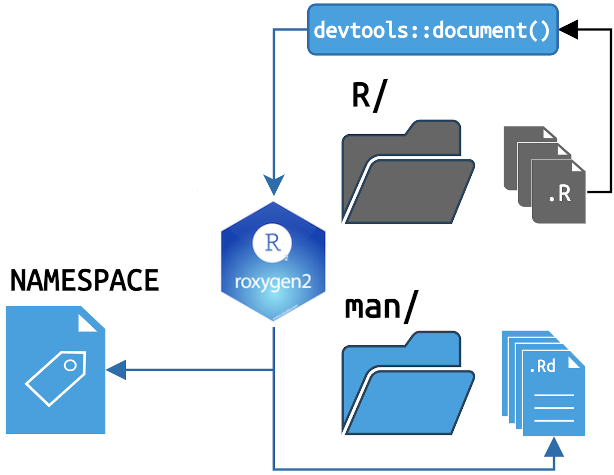
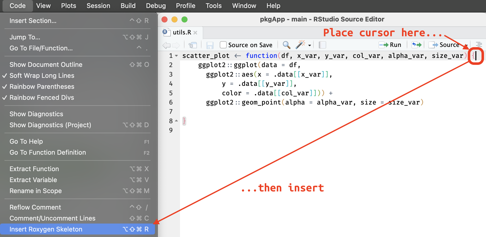
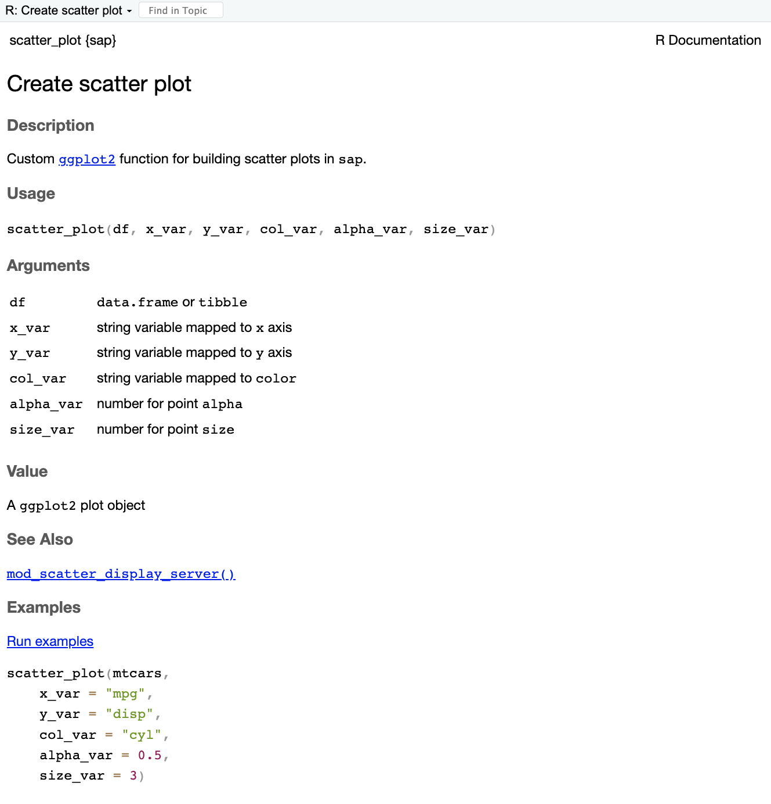
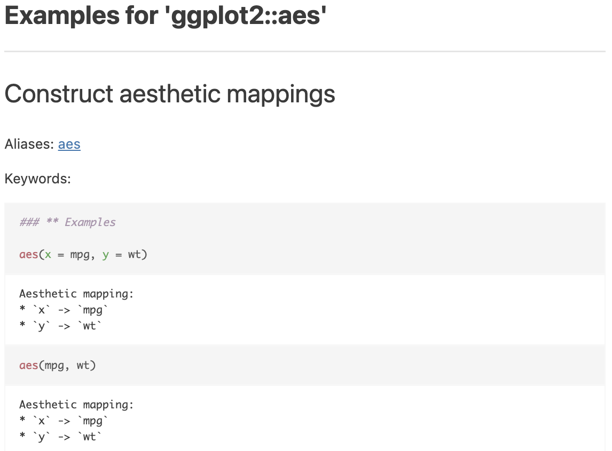
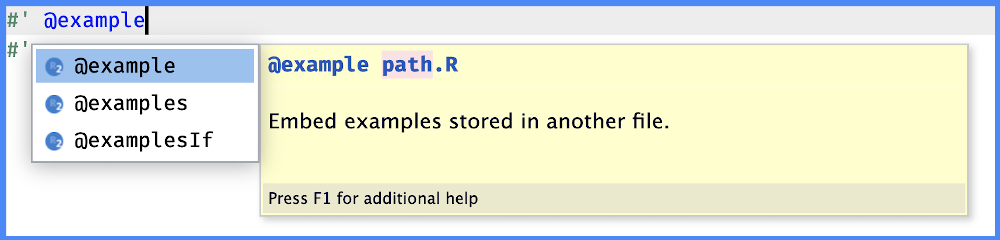
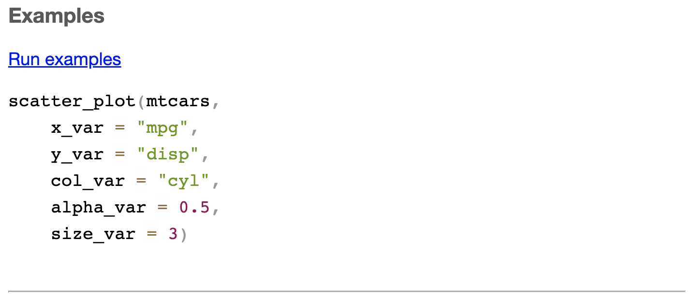
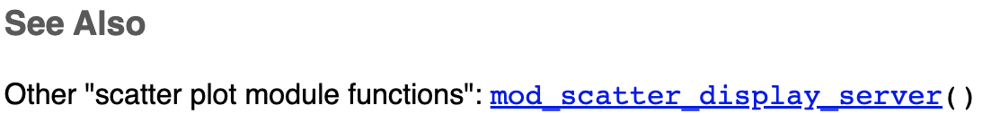
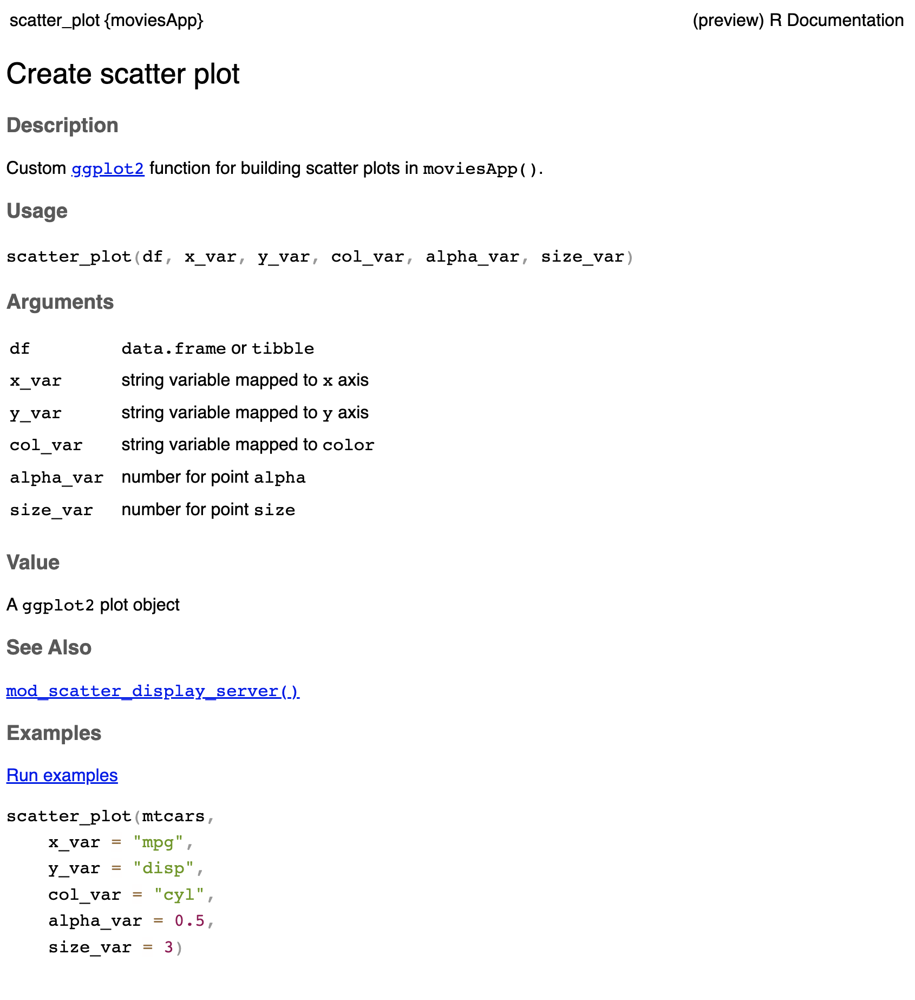
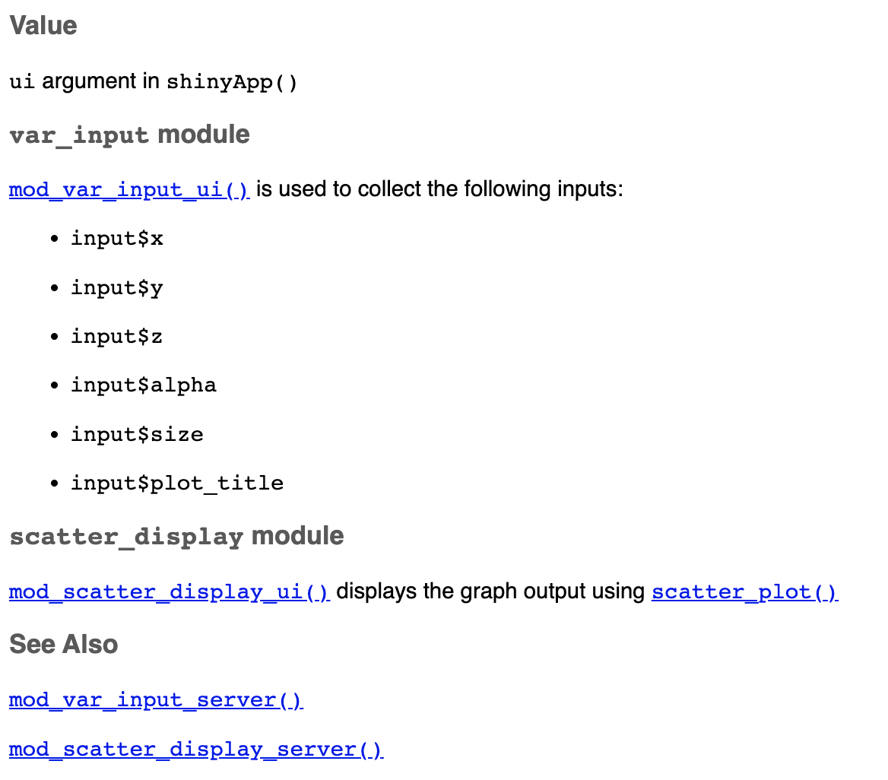

moviesApp/
├── DESCRIPTION
├── NAMESPACE
├── R
│ ├── mod_scatter_display.R
│ ├── mod_var_input.R
│ └── utils.R
├── README.md
├── app.R
├── man
├── movies.RData
├── moviesApp.Rproj
└── www
└── shiny.png
4 directories, 10 files5 Documentation
This chapter covers function documentation in an app-package by introducing the basic fundamentals of the roxygen2 syntax (i.e., the ‘bare minimum’ to include for each function in your app-package). I’ll also touch on a few helpful roxygen2 tags specific to Shiny modules and standalone app functions.
 TLDR
TLDR
Documenting app-package functions:
Make sure each function has documentation for the
@title,@description,@param(s),@return, and@examples(if applicable)Use Markdown for code, emphasis, hyperlinks, etc.
Regularly load and document to preview the help files:
Ctrl/Cmd + Shift + L / D
Link modules with
@seealsoand group functions with@familyInclude any additional information in a new
@section
The current state of moviesApp is stored in the 06b_devtools branch.
(the rsconnect/ folder from deploying moviesApp has been removed)
If you recall, the output from the previous install() returned the following message regarding the documentation:
No man pages found in package ‘moviesApp’
Documenting the functions below R/ will address message, and I strongly encourage checking out the roxygen2 documentation and R Packages for more information on documenting your app-package.
5.1 roxygen2 basics

Git branch: 06b_devtools
roxygen2 connects the package code (i.e., the .R files in the R/ folder) to its documentation files (i.e., the .Rd files in the man/ folder):

roxygen2roxygen2 creates man/ documentationThe two pieces of roxygen2 syntax to know are comment blocks and tags:
Comment blocks are any lines beginning with
#'#' #' #'Tags begin with
@#' #' @tag #'
When documenting functions, roxygen2 tags and comment blocks are placed directly above any functions stored in R/.
#'
#' @tag
#'
my_fun <- function() {
}In the following sections, we’ll cover roxygen2 basics using examples for the scatter_plot() function found in R/utils.R.
Inserting
roxygen2 skeletons
You can insert an roxygen2 skeleton into your function using Code > Insert Roxygen Skeleton

roxygen2 skeleton5.1.1 markdown = TRUE
When we created our app-package with usethis::create_package(), support for markdown formatting in package help files is automatically included by adding Roxygen: list(markdown = TRUE) to the DESCRIPTION file:
Package: moviesApp
Version: 0.0.0.9000
Type: Package
Title: movies app
Description: A movies data Shiny application.
Author: John Smith [aut, cre]
Maintainer: John Smith <John.Smith@email.io>
License: GPL-3
DisplayMode: Showcase
RoxygenNote: 7.2.3
Encoding: UTF-8
Roxygen: list(markdown = TRUE)
- 1
-
Always leave at least one empty final line in your
DESCRIPTIONfile.
5.1.2 @title & @description
The first two sections of roxygen2 documentation are the title and description. These sections don’t require tags–roxygen2 will detect each section as long as there is at least one #' line separating them (and their contents don’t extend past the length indicated in parentheses below):
#' function title (one line)
#'
#' A short description... (one paragraph)
#' The @title and @description for the scatter_plot() function stored in R/utils.R might look like this:
#' Create scatter plot
#'
#' Custom [`ggplot2`](https://ggplot2.tidyverse.org/) function for building scatter plots in `moviesApp()`.
#'
Function
@description and @details
If the contents in the @description for a function requires more complicated formatting than a single paragraph (i.e., multiple paragraphs, lists, etc.), you can use the @details tag:
#' Create scatter plot
#'
#' @description
#' Custom [`ggplot2`](https://ggplot2.tidyverse.org/) function for building scatter plots in `moviesApp()`.
#'
#' @details
#' `scatter_plot()` is a custom `ggplot2` function written to handle string arguments from reactive inputs (i.e., `input$x` or `input$y`). 5.1.3 @param & @return
Document function arguments and outputs with @param and @return:
@param: should include the name and description of each function input (i.e., their type and what they do)#' @param name description of its action- Read more here
@return: these describe the type (or class) and structure of the function output#' @return type/structure of the output- Read more here
Below are examples for @param and @return in the scatter_plot() function stored in R/utils.R:
#'
#' @param df `data.frame` or `tibble`
#' @param x_var string variable mapped to `x` axis
#' @param y_var string variable mapped to `y` axis
#' @param col_var string variable mapped to `color`
#' @param alpha_var number for point `alpha`
#' @param size_var number for point `size`
#'
#' @return A `ggplot2` plot objectTo view how the roxygen2 syntax will appear in the .Rd file, I’ll document moviesApp:
To reduce the amount of repetitive code, I’ll just be showing the keyboard shortcuts for each devtools function from this point forward
5.1.3.0.0.1
Ctrl/Cmd + Shift + D
I can see the scatter_plot.Rd file is written to the man/ folder:
ℹ Updating moviesApp documentation
ℹ Loading moviesApp
Writing scatter_plot.Rd
Documentation completedShiny apps often contain utility functions in helper.R or utils.R files. Storing non-shiny code in these files isn’t a bad practice (in fact, it’s encouraged in Mastering Shiny). However, if we’re following the advice in R Packages,1 we should rename R/utils.R to R/scatter_plot.R so it matches man/scatter_plot.Rd as we transition to an app-package.2
R/utils.R >> R/scatter_plot.R
From now on, I’ve renamed R/utils.R to R/scatter_plot.R, so it aligns with the naming conventions in other R packages.
For a deep dive on R/utils.R files in R packages, I recommend reading Dissecting R Package “Utility Belts”
R documentation (.Rd) files have a formatting style similar to (La)TeX (but roxygen2 saves us from having to learn this syntax). When we open man/scatter_plot.Rd, we see it contains the following:

.Rd file.Rd file syntax
roxygen2 graciously generates the scatter_plot.Rd file (and warns us not to edit it by hand).

roxygen2 tag syntax in .Rd fileNote the following items were added without needing tags:
\name: the name of the function (as it appears in the index)\alias: used to group ‘topics’ and provides a look-up in the package index\arguments: function arguments (header)\item: description of argument
The following two items are a result of the markdown syntax we used:
\href: used for hyperlinks\code: code formatting
To view the help file, I can enter ?scatter_plot in the console:
?scatter_plotAnd an informative message tells me that the development version scatter_plot.Rd is being rendered:
ℹ Rendering development documentation for "scatter_plot"
Previewing the development documentation is a great way to verify the content in each .Rd file meets expectations.
5.1.4 @examples
@examples are unique because they include executable code demonstrating how a function works. In the Posit Workbench IDE, @examples are especially helpful because they come with a ‘single click’ hyperlink (the @examples from ggplot2::aes() are below):


@examples codeThe syntax to create an example for scatter_plot() is below:
#' @examples
#' scatter_plot(mtcars,
#' x_var = "mpg",
#' y_var = "disp",
#' col_var = "cyl",
#' alpha_var = 0.5,
#' size_var = 3)
Tab-completion for
@tags
If you’re documenting your package functions in Posit Workbench, tab-completion is your friend! The help text displayed with each tag ensures you’re including the correct version (see @example vs. @examples below).

@example
@examplesRead more here.
To preview the @examples in the help file, I’ll document() and open the development .Rd file:
5.1.4.0.0.1
Ctrl/Cmd + Shift + D
?scatter_plot
ℹ Rendering development documentation for "scatter_plot"
@examples in .Rd previewThe Run examples hyperlink won’t be active in the .Rd file preview, but reviewing the code in @examples allows me to correct any errors or typos early.
The scatter_plot() function has a documented Title, Description, Usage, Arguments, Value, and Examples. I consider these tags the minimum documentation to include for functions I’m making available to other users.
5.2 Documenting app functions
Your app-package will likely contain at least two functions specific to shiny: modules and a standalone app function. roxygen2 has a few tags that can make the documentation for these functions more informative for readers.
5.2.1 Documenting modules
Below are a few things to consider when documenting module functions:
Modules typically have two functions in a single
.Rfile: one for the UI and a counterpart in the server.Every module function will include at least one
@paramfor the sharedid.Returned objects are critical in
shiny’s reactive context, so I recommend extending the description to include whether or not the returned output is reactive.If the returned output is an input (i.e.
@param) for another function, link to that documentation functions with@seealsoor@family.
Below are some examples from the moviesApp modules.
5.2.2 @seealso
When documenting modules, think of the audience as someone looking to understand the execution path through the application. In moviesApp(), the inputs are collected with the var_input module and then passed to the scatter_display module.
I use @seealso to connect mod_var_input_ui() to its server function counterpart. The hyperlink to mod_var_input_server() from mod_var_input_ui() is created by placing the destination function in square brackets [fun()]:
#' Variable input module (UI)
#'
#' @description
#' `var_input` collects the following graph inputs:
#' * `input$x`
#' * `input$y`
#' * `input$z`
#' * `input$alpha`
#' * `input$size`
#' * `input$plot_title`
#'
#' @param id UI module id
#'
#' @return module UI (HTML)
#'
#' @seealso [mod_var_input_server()]
#' 5.2.2.0.0.1
Ctrl/Cmd + Shift + D
@seealso creates a hyperlink readers can use to open the next module in the execution path.

@seealso linkvar_input to scatter_displayIn mod_var_input_server(), a link can be made to mod_scatter_display_server() (the module function collecting the returned values) using the square brackets in the @return section (without @seealso):
#' Variable input module (server)
#'
#' @param id server module id
#'
#' @seealso [mod_var_input_ui()]
#'
#' @return reactive inputs are returned in a `list()`:
#' * `"y" = input$y`
#' * `"x" = input$x`
#' * `"z" = input$z`
#' * `"alpha" = input$alpha`
#' * `"size" = input$size`
#' * `"plot_title" = input$plot_title`
#'
#' These become in the `var_inputs()` argument in [mod_scatter_display_server()]
#' 5.2.2.0.0.2
Ctrl/Cmd + Shift + D
mod_var_input_ui()

mod_var_input_server()var_input to scatter_display5.2.3 @family
Module functions can also be grouped into families using @family {"description"}. Below is an example of grouping the “scatter plot module functions” into a family:
#' Scatter plot display module (UI)
#'
#' @param id UI module id
#'
#'
#' @return module UI (HTML)
#'
#' @family {"scatter plot module functions"}
#' 5.2.4 @section
The @section tag will create a level two header (##/<h2></h2>) section, which can help organize topics (like how to use an input or argument).
@seealso can also be used to link back to the scatter_plot() utility function:
#' Scatter plot display module (server)
#'
#'
#' @param id server module id
#' @param var_inputs returned reactive list from [mod_var_input_server()].
#'
#' @section Referring to `var_inputs`:
#' Refer to the reactive returned values from `mod_var_input_server()` as:
#' * `var_inputs()$x`
#' * `var_inputs()$y`
#' * `var_inputs()$z`
#' * `var_inputs()$alpha`
#' * `var_inputs()$size`
#' * `var_inputs()$plot_title`
#'
#'
#' @return rendered plot and title output from [scatter_plot()]
#'
#' @family {"scatter plot module functions"}
#' 5.2.4.0.0.1
Ctrl/Cmd + Shift + D

@family in mod_scatter_display_ui()
@seealso in mod_scatter_display_server()The figure above shows how the @seealso links can create a path for the graph parameters through the var_input and scatter_display modules. It also demonstrates how @family groups the scatter_display UI and server functions.
The scatter_plot() utility function should also include a @seealso tag for the module function it’s used in.
#' Create scatter plot
#'
#' Custom [`ggplot2`](https://ggplot2.tidyverse.org/) function for building scatter plots in `moviesApp()`.
#'
#'
#' @param df `data.frame` or `tibble`
#' @param x_var string variable mapped to `x` axis
#' @param y_var string variable mapped to `y` axis
#' @param col_var string variable mapped to `color`
#' @param alpha_var number for point `alpha`
#' @param size_var number for point `size`
#'
#' @return A `ggplot2` plot object
#'
#'
#' @examples
#' scatter_plot(mtcars,
#' x_var = "mpg",
#' y_var = "disp",
#' col_var = "cyl",
#' alpha_var = 0.5,
#' size_var = 3)
#'
#' @seealso [mod_scatter_display_server()]
#' 5.2.4.0.0.2
Ctrl/Cmd + Shift + D
scatter_plot() in mod_scatter_display_server()
@seealso in scatter_plot()The goal when cross-referencing functions in your app-package is for anyone reading your documentation to follow the links and better understand any modules, their inputs, reactive values, and outputs.
In this case, linking to the scatter_plot() function gives readers an interactive example to preview the output.
5.2.5 Standalone app functions
Splitting the code in app.R into separate functions has multiple benefits:
Developing and loading a function is easier if stored in the
R/folder.Having a dedicated UI, server, and app function means we can develop them independently.
A standalone app function makes storing multiple applications in the same app-package possible.
I’ve split the UI and server from movies_app() into separate movies_ui() and movies_server() below.
5.2.5.1 UI & Server functions
The movies_ui() doesn’t have any arguments–the only change is wrapping the shiny::fluidPage() in shiny::tagList():
movies_ui <- function() {
shiny::tagList(
shiny::fluidPage(
theme = shinythemes::shinytheme("spacelab"),
shiny::titlePanel(
shiny::div(
shiny::img(
src = "shiny.png",
height = 60,
width = 55,
style = "margin:10px 10px"
),
"Movies Reviews"
)
),
shiny::sidebarLayout(
shiny::sidebarPanel(
mod_var_input_ui("vars")
),
shiny::mainPanel(
mod_scatter_display_ui("plot")
)
)
)
)
} movies_server() is written to be passed to the server argument in shinyApp():
movies_server <- function(input, output, session) {
selected_vars <- mod_var_input_server("vars")
mod_scatter_display_server("plot", var_inputs = selected_vars)
}5.2.5.1.1 usage
I’ll explicitly describe the use of movies_ui() and set @usage to NULL (note the use of a code block). I’ll also use @section to describe each module UI function (and link to the server functions with @seealso).
#' Movies UI function
#'
#' UI function for standalone app function
#'
#' @usage NULL
#'
#' @details
#' The [movies_app()] function is as a wrapper for `shiny::shinyApp()`:
#'
#' ```
#' shinyApp(ui = movies_ui, server = movies_server)
#' ```
#'
#' In [movies_app()]:
#' * UI is stored in `movies_ui()`
#' * server is stored in [movies_server()]
#'
#' @section `var_input` module:
#' [mod_var_input_ui()] is used to collect the following inputs:
#' * `input$x`
#' * `input$y`
#' * `input$z`
#' * `input$alpha`
#' * `input$size`
#' * `input$plot_title`
#'
#' @seealso [mod_var_input_server()]
#'
#'
#' @section `scatter_display` module:
#' [mod_scatter_display_ui()] displays the graph output using [scatter_plot()]
#'
#' @seealso [mod_scatter_display_server()]
#'
#' @return `ui` argument in `shiny::shinyApp()`
#' 5.2.5.1.1.1
Ctrl/Cmd + Shift + D

movies_ui()The documentation for movies_server() is very similar to the Ui function–each module server function is documented in it’s own @section.
Still, I’ll include a @section for Communication that describes how values are passed between mod_var_input_server() and mod_scatter_display_server().
#' Movies server function
#'
#' Server function for standalone app function
#'
#' @usage NULL
#'
#' @details
#' The [movies_app()] function is as a wrapper for `shiny::shinyApp()`:
#'
#' ```
#' shinyApp(movies_ui, movies_server)
#' ```
#'
#' In [movies_app()]:
#' * UI is stored in [movies_ui()]
#' * server is stored in `movies_server()`
#'
#' @section `var_input` module:
#' [mod_var_input_server()] returns following reactive values:
#' * `x`
#' * `y`
#' * `z`
#' * `alpha`
#' * `size`
#' * `plot_title`
#'
#' @seealso [mod_var_input_ui()]
#'
#' @section `scatter_display` module:
#' [mod_scatter_display_server()] displays the `ggplot2` graph with the [scatter_plot()] function.
#'
#' @seealso [mod_scatter_display_ui()]
#'
#' @section Communication:
#' The output from [mod_var_input_server()] should be supplied to the
#' `var_inputs` argument of [mod_scatter_display_server()].
#
#' @return `server` argument in `shiny::shinyApp()`
#' 5.2.5.1.1.2
Ctrl/Cmd + Shift + D

movies_server()5.2.5.2 movies_app()
The standalone app function (movies_app()) automatically calls shinyApp(), with the movies_ui and movies_server functions supplied to ui and server (without parentheses).
movies_app <- function() {
shiny::shinyApp(ui = movies_ui, server = movies_server)
}The documentation for the standalone app function can be minimal–as long as it provides links to the UI and server.
#' Movies app standalone function
#'
#' Wrapper function for `shiny::shinyApp()`
#'
#' @return Shiny app
#'
#'
#' @seealso [mod_var_input_ui()], [mod_var_input_server()], [mod_scatter_display_ui()], [mod_scatter_display_server()]
#'5.2.5.2.0.1
Ctrl/Cmd + Shift + D

movies_app()I’ll change the contents of app.R to the following:
# pkgs <- c("shiny", "shinythemes", "stringr", "ggplot2", "rlang")
# install.packages(pkgs, quiet = TRUE)
# packages ------------------------------------
library(shiny)
library(shinythemes)
library(stringr)
library(ggplot2)
library(rlang)
# movies_app ------------------------------------
movies_app()Now that we’ve documented everything in R/, we’ll run load(), document(), and install():
5.2.5.2.0.2
Ctrl/Cmd + Shift + L
devtools::load_all(".")
ℹ Loading moviesApp5.2.5.2.0.3
Ctrl/Cmd + Shift + D
==> devtools::document(roclets = c('rd', 'collate', 'namespace'))
ℹ Updating moviesApp documentation
ℹ Loading moviesApp
Documentation completed5.2.5.2.0.4
Ctrl/Cmd + Shift + B
==> R CMD INSTALL --preclean --no-multiarch --with-keep.source moviesApp
* installing to library ‘/path/to/local/install/moviesApp-090c61fc/R-4.2/x86_64-apple-darwin17.0’
* installing *source* package ‘moviesApp’ ...
** using staged installation
** R
** byte-compile and prepare package for lazy loading
** help
*** installing help indices
** building package indices
** testing if installed package can be loaded from temporary location
** testing if installed package can be loaded from final location
** testing if installed package keeps a record of temporary installation path
* DONE (moviesApp)In the Console, we should see the following:
Restarting R session...
> library(moviesApp)The roxygen2 documentation for moviesApp is saved in the 02-roxygen branch. As we can see, calling devtools::document() generates the .Rd files in the man/ folder for each function in the R/ folder:
R/
├── mod_scatter_display.R
├── mod_var_input.R
├── movies_app.R
├── movies_server.R
├── movies_ui.R
└── utils.R
1 directory, 6 filesman/
├── mod_scatter_display_server.Rd
├── mod_scatter_display_ui.Rd
├── mod_var_input_server.Rd
├── mod_var_input_ui.Rd
├── movies_app.Rd
├── movies_server.Rd
├── movies_ui.Rd
└── scatter_plot.Rd
1 directory, 8 files
This section’s code is in the 07_roxygen2 branch of moviesApp.
5.3 Recap
Good documentation aims to make it as easy as possible for others (and future you) to understand what your function does and how to use it.
Below is a recap of the topics covered in this chapter.
roxygen2 recap
This chapter covered:
Function
@titleand@description: The@titleshould be a short one-line description of the function, followed by a more detailed paragraph@description. These tags should give users an idea of what the function does (you can also use@details)Arguments (
@param) and outputs (@return): List all function arguments with@param. Include the argument type (e.g., integer, character, etc.) and a brief description of what the argument does. Be sure to mention any default or optional arguments. Function outputs should be listed with@returnand describe the type or class of the object, whether or not it’s reactive, and mention any related functions.Examples:
@examplesprovide executable R code that captures how the function is used in your app-package. These are incredibly valuable for new users trying to understand how a function (and your app-package) works.
App-package specific considerations:
Connect functions with
@seealsoand@family: Use@seealsoto provide links to related functions (i.e., modules) so users can click through a ‘guided tour’ of your application’s code–group similar functions using@family {description}.Give more info with
@sections: Use@sectionto give in-depth explanations and specific details about how a function works, including any information about the@usageor its@params.@usage: This field will be automatically generated byroxygen2, but in some circumstances, it makes sense to set it toNULLand describe a function’s use explicitly.
In the next section, we’ll use roxygen2 to manage our app-package dependencies.
‘most of our packages have a
utils.Rfile (Section 6.1) that contains small utility functions that are useful internally, but aren’t part of the core purpose of those packages. We don’t export such functions.’↩︎Having a 1:1 match on function and file names will also make writing and running tests easier.↩︎